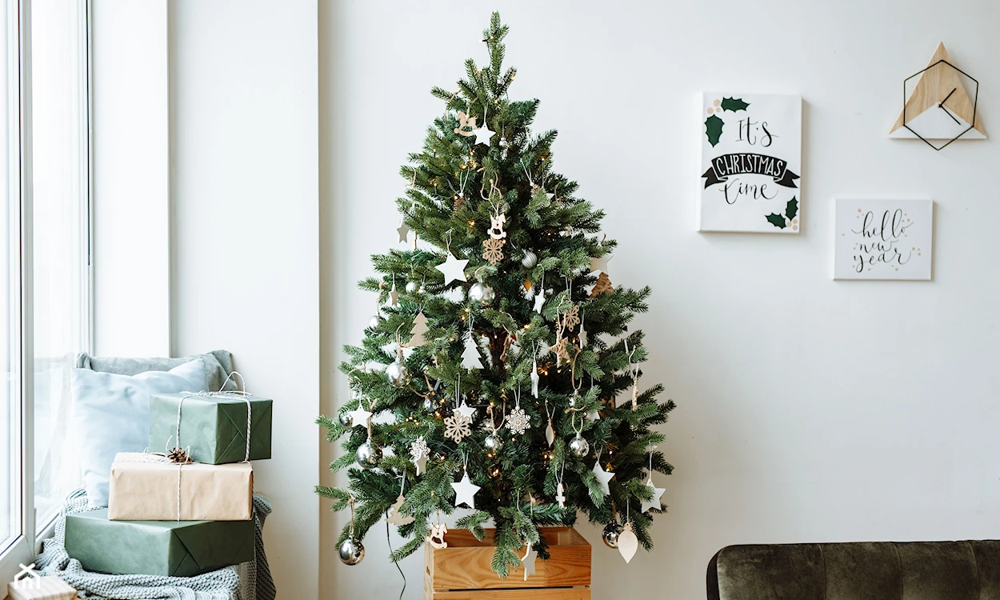
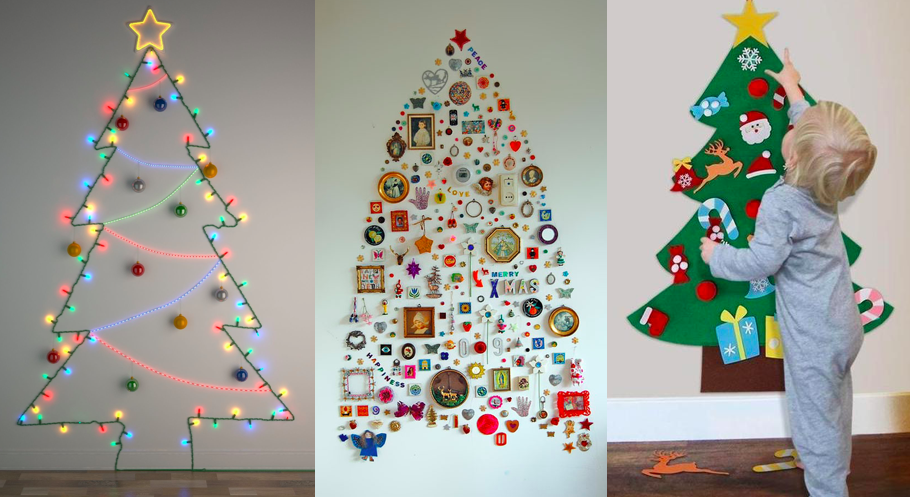

Jak nowocześnie i modnie ubrać choinkę?
Święta to doskonała okazja do stworzenia wyjątkowej i modnej choinki. Oto trzy pomysły na jej ubranie:
1. Styl Skandynawski
Styl skandynawski charakteryzuje się prostotą i naturalnością. Oto kroki:
- Kup białe, drewniane ozdoby.
- Dodaj kilka minimalistycznych bombek w pastelowych kolorach.
- Rozmieść delikatne światełka wzdłuż gałęzi.
Przybliżony koszt: 100-150 zł.
2. Eko-Przyjazny Styl
Stwórz ekologiczną choinkę z naturalnych materiałów. Oto kroki:
- Wykorzystaj ozdoby z drewna, papieru i tkaniny.
- Dodaj oryginalne ozdoby DIY, takie jak bombki z recyclingu.
- Użyj naturalnych wstążek i kokard.
Przybliżony koszt: 80-120 zł.
3. Glamour i Blask
Postaw na blask i elegancję. Oto kroki:
- Kup błyszczące bombki w jednolitych kolorach, takich jak złoto, srebro lub burgund.
- Dodaj lśniące łańcuchy i eleganckie wstęgi.
- Umieść efektowne ozdoby na wierzchołku choinki.
Przybliżony koszt: 120-180 zł.